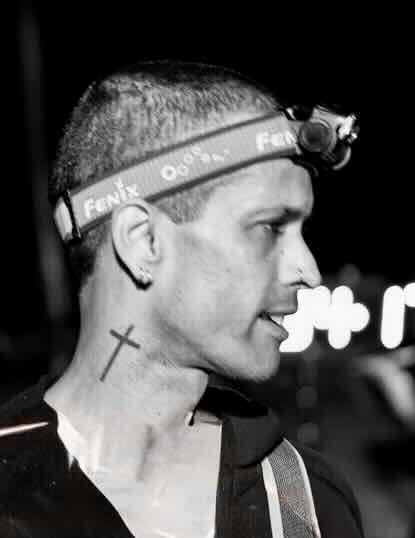
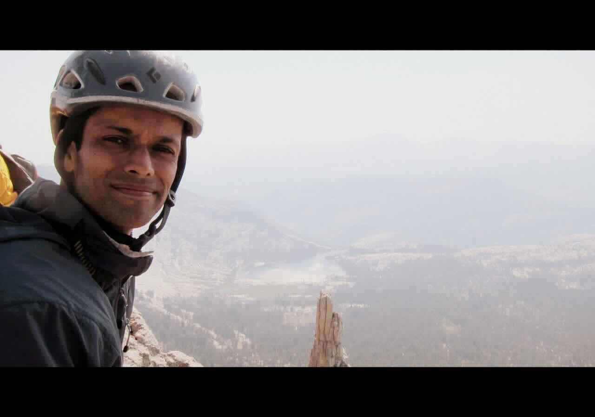
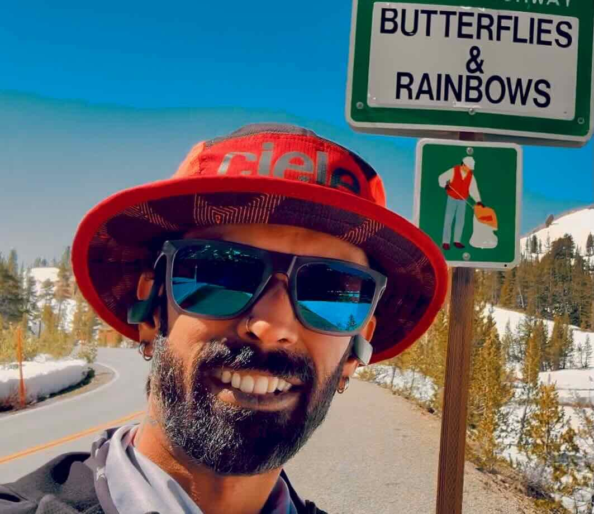
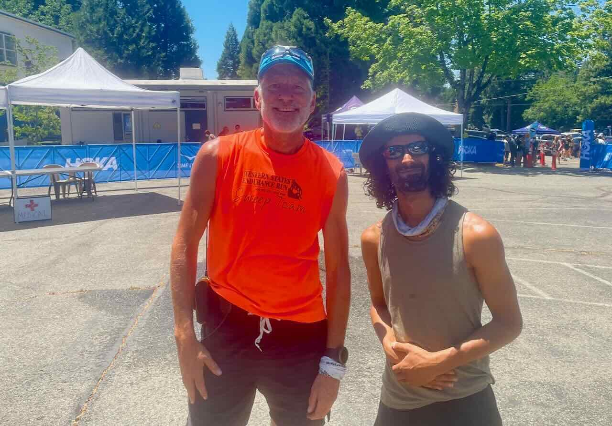
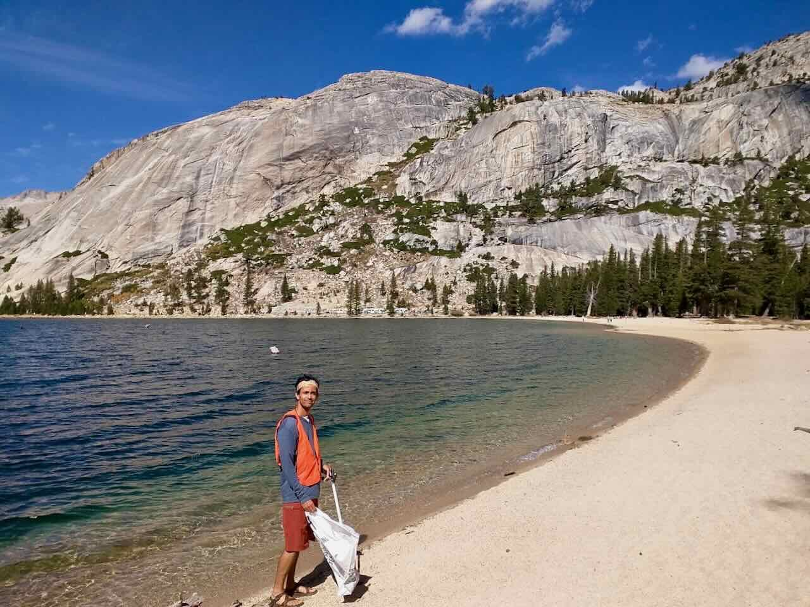
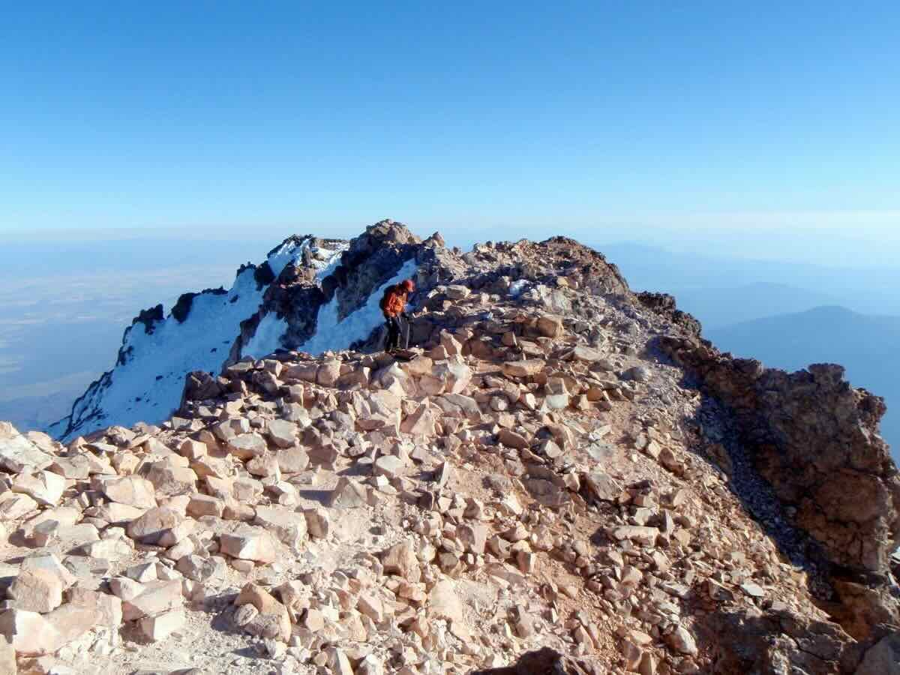
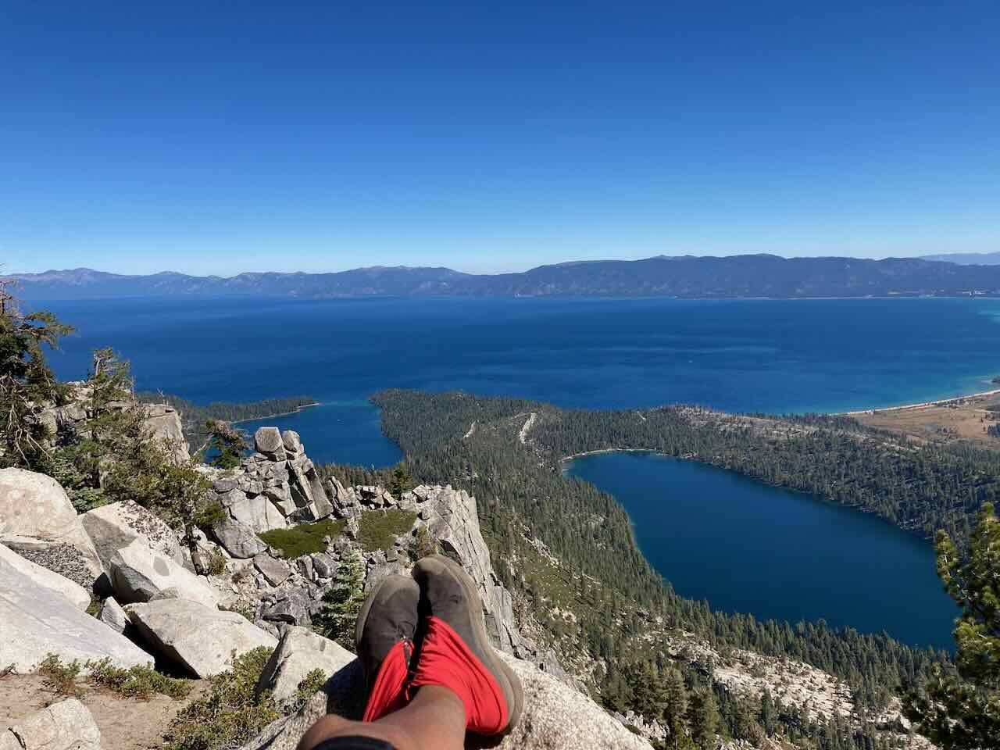
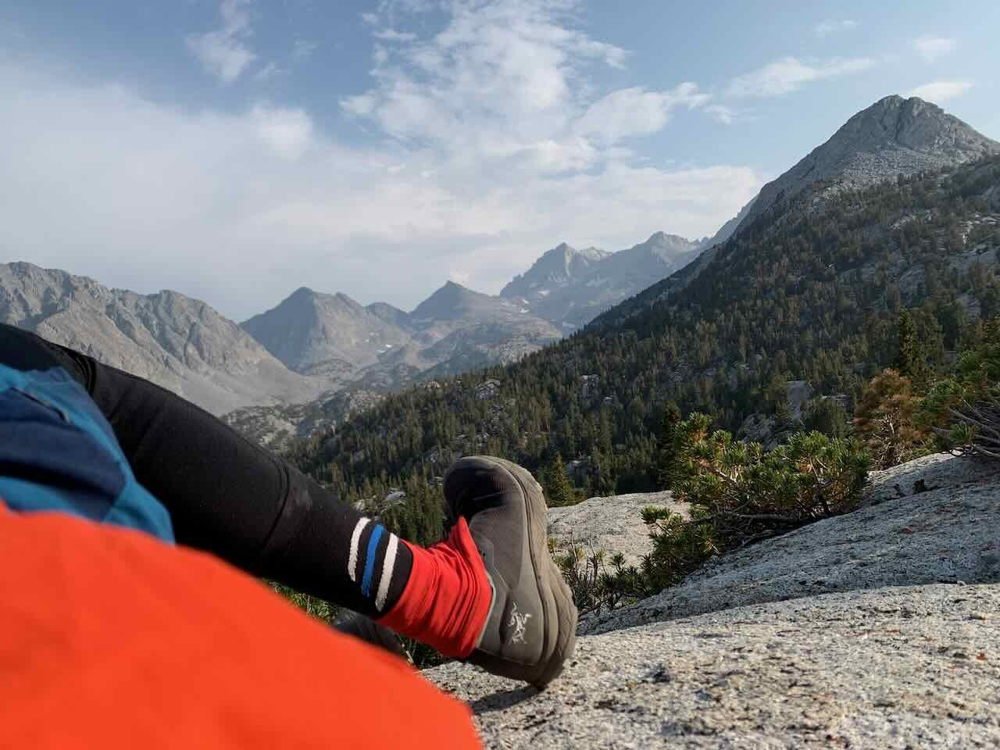
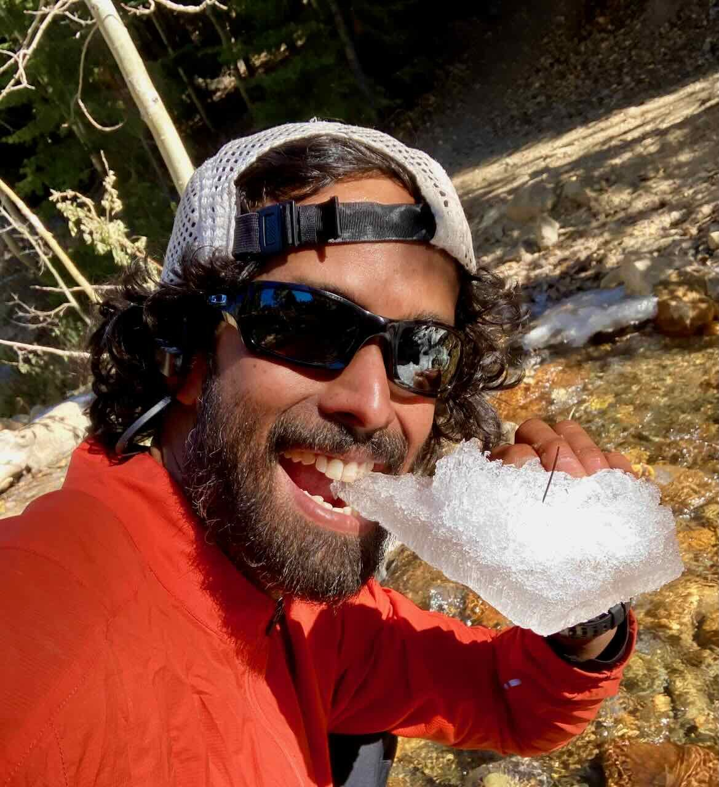

Behavioral telemetry and workflow analysis
Clickstream analysis, journey diagnosis, benchmarking, and behavioral pattern detection to show how product use actually unfolds in the field.
Quantitative User Experience Research
I lead quantitative user experience research that combines behavioral research, statistics, experimentation, and product thinking. This portfolio highlights confidentiality-safe summaries of work spanning multi-step journeys, trust-sensitive decisions, segmentation systems, and workflow design.
About
My work sits at the overlap of behavioral research, statistics, and product decision-making. I use quantitative UX research to help teams understand users, workflows, and product behavior well enough to make better decisions.
That means bringing statistical depth when the problem calls for analytics, predictive modeling, experimentation, or measurement rigor, and statistical breadth when the goal is customer insight, rapid feedback, or strategy impact.

What I optimize for
Personal
The same habits I bring to research show up outside work: long horizons, careful preparation, humility in hard environments, and a bias toward service. These photos are a more personal view of the places and practices that keep me grounded.
“Thy word is a lamp unto my feet, and a light unto my path.”
Psalm 119:105
My work is shaped by service, stewardship, humility, and care for people. Those values are rooted in my Christian faith, and I try to express them in ways that are accessible in secular, scientific, and multidisciplinary settings.
Outside research, I am drawn to mountains, trail running, climbing, volunteering, and endurance work. They teach patience, risk assessment, attention, recovery, and respect for conditions that are bigger than you. That is also how I try to approach complicated product and research work.
Personal anchors









Selected engagements
A selection of anonymized engagements spanning product strategy, trust, conversion, segmentation, and adaptive experience design. Details are intentionally generalized to respect client confidentiality while showing the kinds of problems, methods, and outcomes I help teams navigate.
Toolkit
Clickstream analysis, journey diagnosis, benchmarking, and behavioral pattern detection to show how product use actually unfolds in the field.
Survey design, scale development, preference measurement, validation work, and latent-construct modeling for questions that are not directly observable.
Segmentation systems grounded in observed behavior, profiling, classification, and measurable product implications rather than static archetypes.
Experimental thinking, feature prioritization, predictive modeling, and decision-ready synthesis that help teams choose where to invest next.
Process
Clarify the business risk, the product question, and what would actually change if the team learned something new.
Match the method to the problem, whether that means experimentation, telemetry analysis, survey measurement, segmentation, or a blended design.
Bring together behavioral data, workflow signals, and well-structured research measures so patterns are interpretable rather than just descriptive.
Translate findings into prioritization frameworks, scorecards, segment definitions, recommendations, and roadmap inputs that teams can actually use.